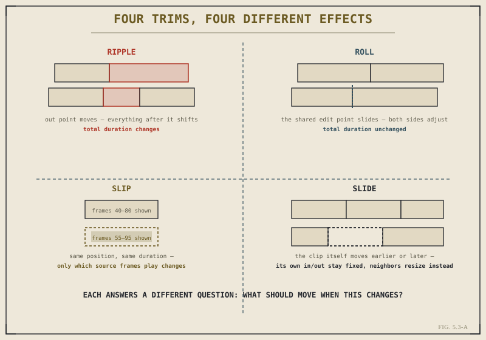

This is the chapter Part V has been building toward. Four trim types, each answering Chapter 5.1's core question — what should move when a clip's length or content changes — in a distinct way. Learn to tell them apart instantly, by what each one does to the material around it, and precise trimming stops being a matter of trial and error and starts being a matter of simply picking the right tool for what you're actually trying to achieve.

Same goal — adjust an edit — four structurally different ways of achieving it.
Ripple: Extending or Shortening, With Everything After It Following
A ripple trim adjusts one clip's in or out point, and every clip after it on that track shifts to accommodate the change — later if the clip got longer, earlier if it got shorter. This is the trim-mode sibling of Chapter 4.4's Insert placement: both push everything downstream to make room, the difference being that Insert places something new, while a ripple trim adjusts something already there. Total sequence duration changes as a direct consequence, since material is genuinely being added or removed from the timeline's overall length.
Reach for a ripple trim when a clip is simply the wrong length, and the goal is to fix its duration while keeping every other clip's own internal timing untouched relative to it — everything just slides to a new position to make room, without anything else on the timeline actually being altered.
Roll: Moving the Boundary Between Two Clips, Together
A roll trim is fundamentally different: it adjusts the shared edit point between two adjacent clips, extending one while shortening the other by exactly the same amount, so the boundary between them simply slides earlier or later without changing the total combined duration of the two clips, or anything else downstream. Nothing else on the timeline shifts at all — only where the cut between these two specific clips happens to land.
Ripple asks "how much total time should this section take." Roll asks "exactly where, within that fixed amount of time, should the cut between these two clips fall." They can look similar at a glance and mean genuinely different things.
This is precisely the operation Chapter 3.4 described the Cut page's trim timeline supporting by default — adjusting both sides of an edit point together. Now, with the vocabulary established, you know that behavior by its proper name: a roll trim. Reach for it when a cut's overall position and the surrounding sequence's total length are already correct, and the only thing that needs adjusting is exactly where, frame by frame, that specific cut lands.
Slip: Changing What's Shown Without Moving Anything
A slip trim doesn't touch the clip's position on the timeline or its duration at all. Instead, it shifts which range of frames from the source clip that timeline clip is actually displaying — moving both the in and out points together, by the same amount, within the source material. Picture a clip using seconds 40 through 80 of a longer source recording; slipping it might change that to seconds 55 through 95 of the exact same source, while the clip's timeline position and length stay completely fixed.
This is the right tool when a clip's timing relative to everything around it is already correct — its length and position on the timeline are exactly right — but the specific content within that window isn't quite right yet: a reaction that's slightly early or late relative to the clip's own boundaries, or simply a better take of the same action available elsewhere in the source material. Slip changes content without disturbing structure.
Slide: Moving a Clip Without Changing Its Own In or Out Points
Slide is, in a sense, the mirror image of slip. Rather than changing what a clip shows, it changes where that clip sits on the timeline — moving it earlier or later — while the clip's own in and out points, and therefore its own duration and content, remain completely untouched. To make room, the clips immediately before and after the one being moved automatically resize to compensate, absorbing the shift so total sequence duration stays unchanged.
Reach for slide when a clip itself is exactly right — correct content, correct duration — but its position relative to its neighbors needs to shift slightly, without altering what that clip actually shows or touching anything beyond its immediate neighbors.
A Practical Way to Choose, Fast
In the moment, under real editing pressure, the fastest way to choose correctly is to ask what specifically is wrong: if the total length of a section is wrong, that's ripple. If a cut's exact position between two fixed-length clips is wrong, that's roll. If a clip's timing is right but its content isn't, that's slip. If a clip's content is right but its position among its neighbors isn't, that's slide. This decision takes a fraction of a second once it's internalized, and it's worth deliberately naming which trim you're reaching for, even mentally, until the choice becomes automatic rather than something you have to reason through each time.
With all four trim types established, Chapter 5.4 covers Match Frame — a tool for stepping back from the timeline to its source material, useful once a trim reveals you need more of a shot than what's currently on the timeline, or a different take of it entirely.
Key Concepts to Remember
- Ripple changes total duration by pushing everything downstream — reach for it when a section's overall length is wrong.
- Roll moves a shared edit point between two clips without changing total duration — for when the cut's exact position is wrong.
- Slip changes which source frames a fixed clip shows without moving it — for when timing is right but content isn't.
- Slide moves a clip among its neighbors without changing its own content — for when content is right but position isn't.
Cross-References Forward
| → Ch. 5.4 | Covers Match Frame, for returning to source material once a trim reveals more footage is needed. |
| → Ch. 3.4 | Revisit the Cut page's trim timeline now that its behavior has a proper name: a roll trim. |
| → Ch. 4.4 | Compare ripple trims against Insert placement — related, but distinct, operations. |